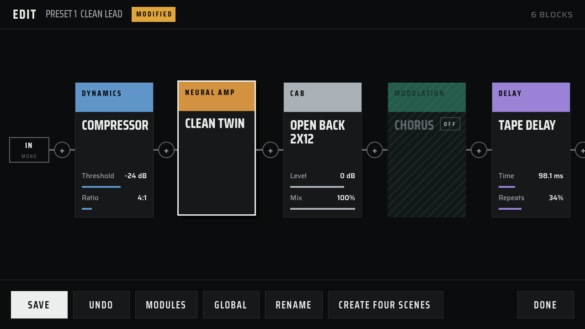
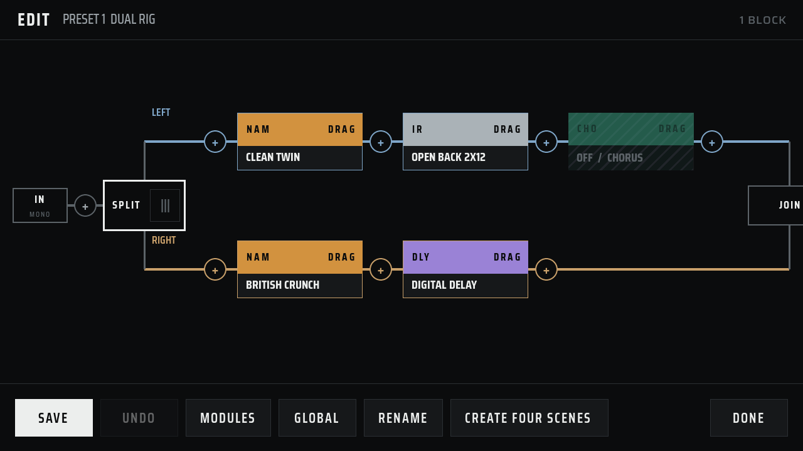
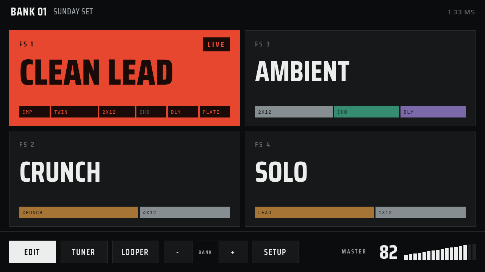
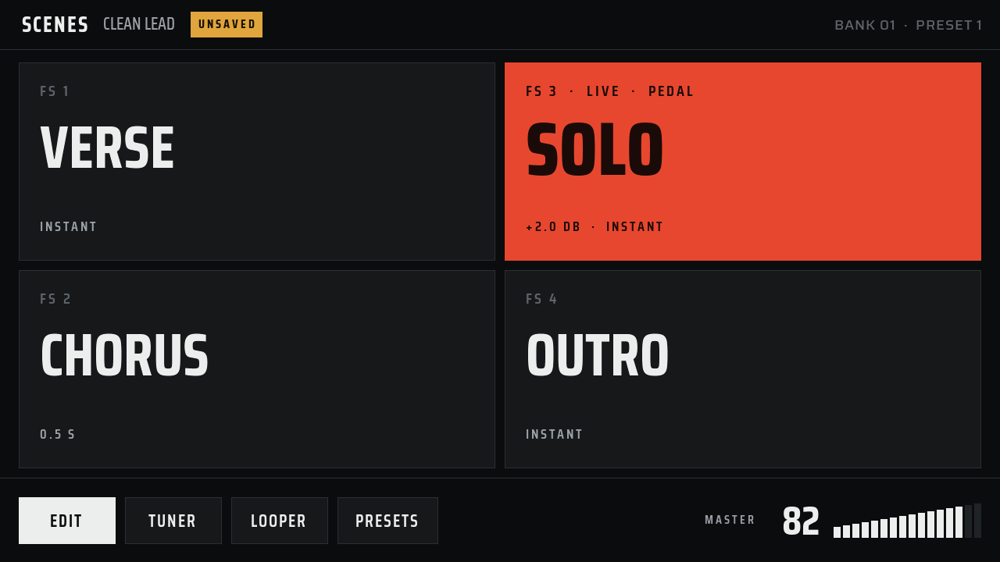
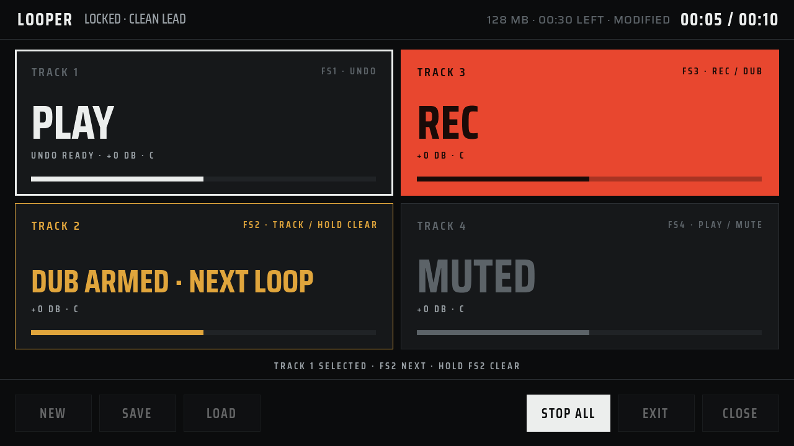
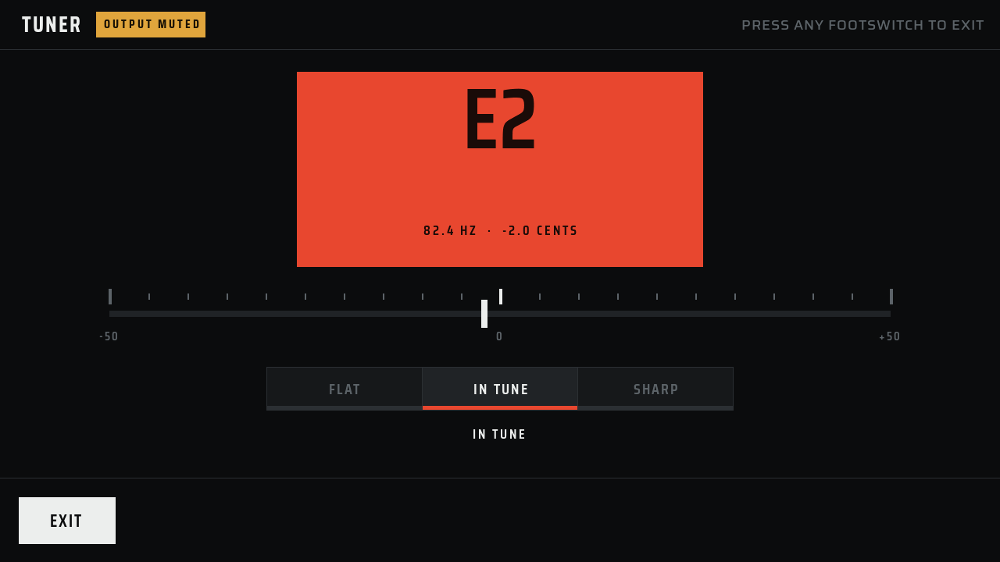

Play the whole rig from four footswitches.
Ardor runs NAM amp captures, cabinet IRs, and 48 built-in effects on a Raspberry Pi. The source is open.

Use the tones you already own.
Load Neural Amp Modeler captures and cabinet IRs in the browser manager.
Ardor includes no third-party captures. Add only files that you own or have permission to use.
.nam capture
Cabinet IR
48 effects in five families.
Each family has one color, on the pedal and in the manager.
- Chorus · Flanger
- Rotary · Vibe
- Phaser · Vintage Trem
- Poly Octave · Pattern Trem
- Auto Swell · Filter
- Ladder Sweep · Formant
- Quadrature · Destroyer
- Whammy · Harmonizer
- RAT Distortion
- Big Cheese Fuzz
- Tape Machine
- Compressor
- Noise Gate
- Transient Shaper
- 5-Band EQ
- Stereo Widener
- GCB-95 Wah
- Digital · Tape
- Dual · Filter
- Lo-fi
- Bucket Brigade
- Duck · Pattern
- Swell · Tremolo
- Convolution · Room
- Hall · Plate
- Spring · Bloom
- Cloud · Shimmer
- Chorale · Nonlinear
- Swell · Magneto
- Reflections
Build the chain from left to right.
Add drive, amp, cabinet, and effect blocks in the order you want. Split into two lanes for a stereo rig.

Read it from standing height.
The live preset fills with red. Everything else stays dark, so you see the change from 1.5 metres.




Scroll sideways for Scenes, Looper, and Tuner.
Hear the output.
One guitar take, recorded dry. Switch to the Ardor output while it plays.
Confirm: preset name and recording chain for this clipEvery layer is open.
The DSP engine, the touch UI, the preset format, the enclosure files, and the firmware image are MIT-licensed. Build it, change it, and send your changes back.